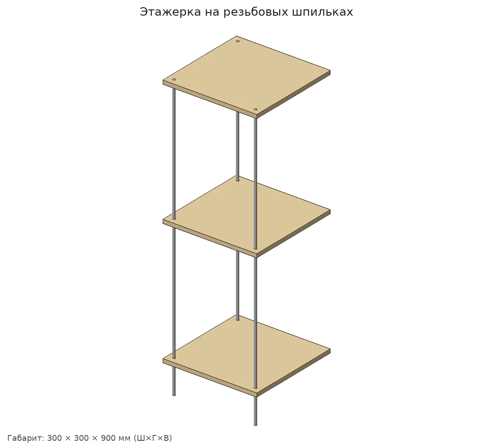
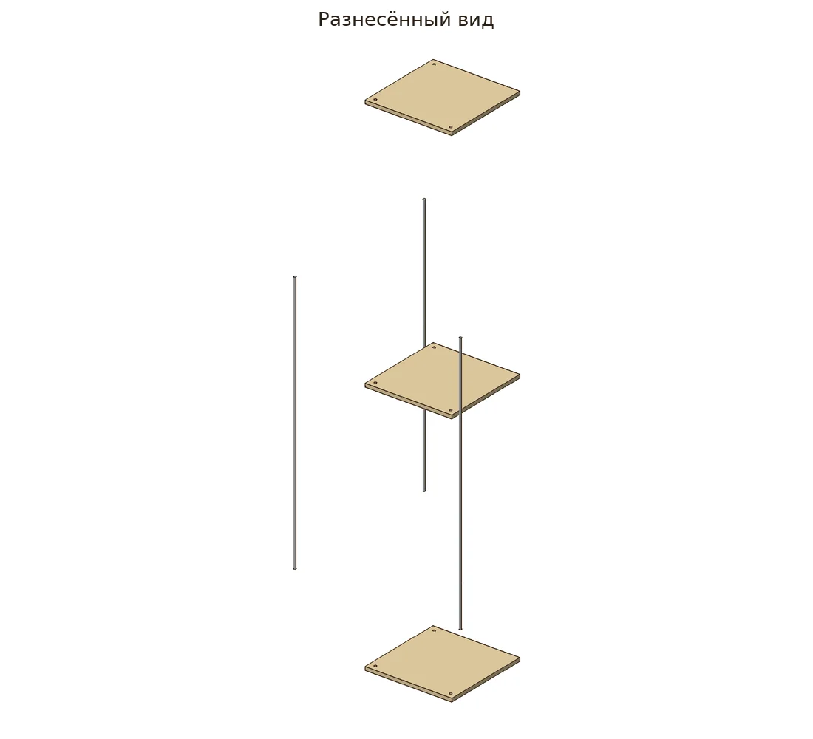
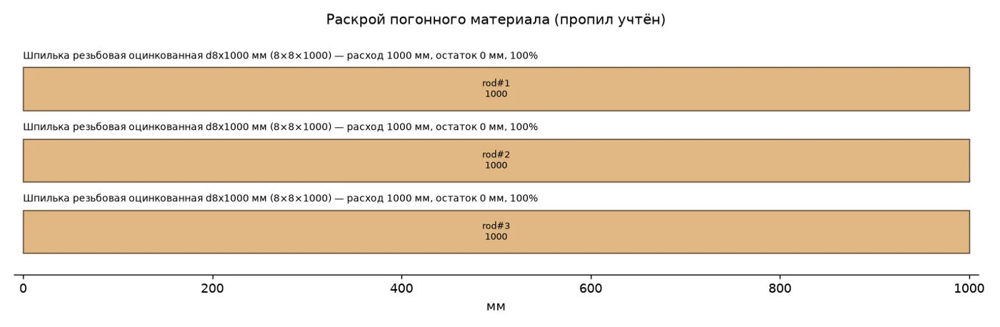
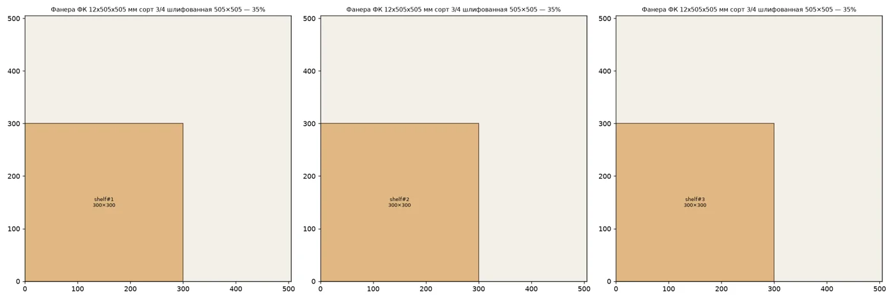
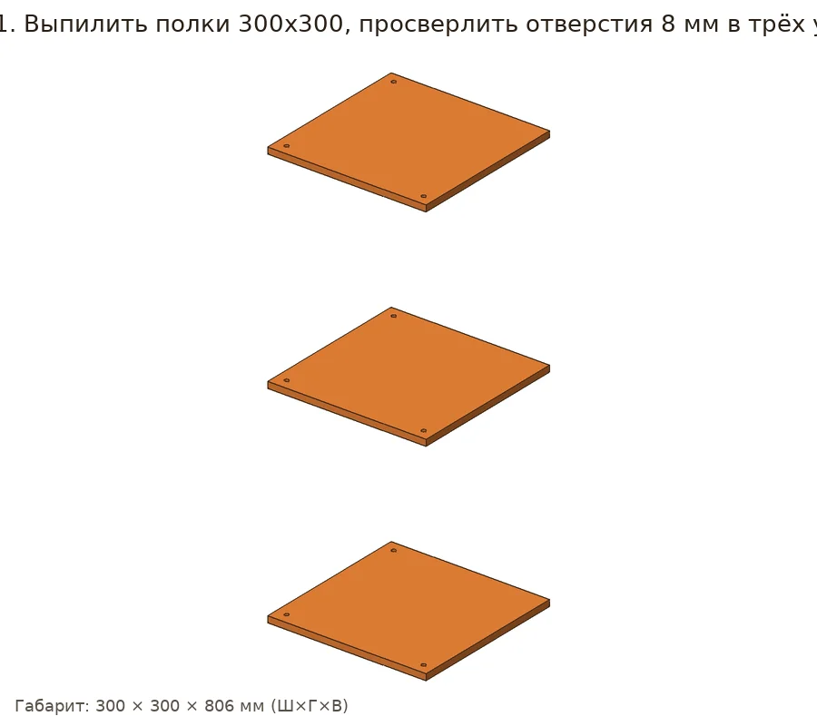
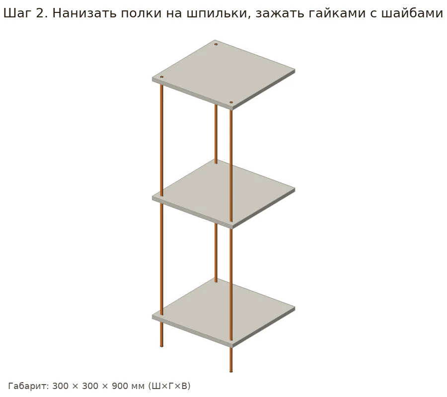

Этажерка на резьбовых шпильках
Индустриальная этажерка: квадратные полки из фанеры нанизаны на 3 шпильки М8 и зажаты гайками — высоту полок легко менять.
- Выпилить 3 полки
- Сверлить отверстия стопкой
- Отпилить шпильки до 900
- Зажать полки гайками
Как сделать подробно
- Из двух листов фанеры 505×505 выпилить 3 квадрата 300×300, углы скруглить.
- Сложить полки стопкой и просверлить сразу все отверстия 8 мм в трёх углах.
- Отпилить шпильки М8 ножовкой по металлу до 900 мм.
- Нанизать полки на шпильки, каждую зажать гайками с шайбами сверху и снизу.
- Выставить уровень, покрыть лаком.
Что купить в «Петровиче»
| Позиция | Зачем | Кол-во | Цена | Сумма |
|---|---|---|---|---|
| материал | ||||
| Шпилька резьбовая оцинкованная Шпилька резьбовая оцинкованная d8x2000 мм · арт. 665879 |
раскрой: 1 заготовка по 2000 мм | 1 шт | 137 ₽ | 137 ₽ |
| Шпилька М8 Шпилька резьбовая оцинкованная d8x1000 мм · арт. 665878 |
раскрой: 1 заготовка по 1000 мм | 1 шт | 81 ₽ | 81 ₽ |
| Фанера 12×505×505 Фанера ФК 12х505х505 мм сорт 3/4 шлифованная · арт. 634466 |
раскрой листа | 3 лист | 362 ₽ | 1086 ₽ |
| фурнитура | ||||
| Гайки М8 Гайка шестигранная оцинкованная М8 DIN 934 (10 шт.) · арт. 101746 |
18 шт. | 2 упак | 46 ₽ | 92 ₽ |
| Шайбы М8 Шайба оцинкованная 8х16 мм DIN 125А (20 шт.) · арт. 109300 |
18 шт. | 1 упак | 47 ₽ | 47 ₽ |
| отделка | ||||
| Лак яхтный аэрозоль Лак алкидный яхтный аэрозольный Престиж бесцветный 425 мл глянцевый · арт. 1098186 |
нужно ≈0.146 л | 1 шт | 204 ₽ | 204 ₽ |
| расходник | ||||
| Шкурка P120 Наждачная бумага Flexione 230х280 мм Р120 влагостойкая · арт. 691898 |
≈1.67 листа | 2 шт | 42 ₽ | 84 ₽ |
| оснастка | ||||
| Сверло 8 мм Сверло по дереву спиральное Vira 8х110 мм (552008) · арт. 669515 |
shelf#1 | 1 шт | 79 ₽ | 79 ₽ |
| Ножовка по дереву Ножовка по дереву 400 мм 9 зуб/дюйм средний зуб · арт. 681543 |
раскрой | 1 шт | 226 ₽ | 226 ₽ |
| Стусло Стусло Сибртех пластиковое 300х65 мм (22571) · арт. 968520 |
ровные торцы 90°/45° | 1 шт | 143 ₽ | 143 ₽ |
| Ножовка по металлу Ножовка по металлу Hesler 300 мм 24 зуб/дюйм средний зуб · арт. 681539 |
резка профиля | 1 шт | 222 ₽ | 222 ₽ |
| Очки защитные Исток открытые с Очки защитные Исток открытые с желтыми линзами (ОЧК014) · арт. 685159 |
металлическая стружка | 1 шт | 112 ₽ | 112 ₽ |
| Рулетка Рулетка с фиксатором 3 м x 16 мм · арт. 159373 |
разметка | 1 шт | 99 ₽ | 99 ₽ |
| Карандаш Карандаш строительный малярный Hesler (2 шт.) · арт. 125418 |
разметка | 1 упак | 30 ₽ | 30 ₽ |
| Итого, включая оснастку 911 ₽ | 2642 ₽ | |||
Источник идеи: https://www.houseofhawthornes.com/diy-industrial-pipe-shelves/. Проект переработан под шуруповёрт 12 В и ручной инструмент.
Инженерная проработка проверено
Параметрическая 3D-модель с настоящими отверстиями, крепёж расставлен по правилам (Eurocode 5, упрощённо для DIY), раскрой с учётом пропила, закупка упаковками. Габарит модели 300×300×900 мм, масса ≈3.17 кг. Прочность не рассчитывалась.






Проверка пройдена: ошибок и предупреждений нет.
Что исправлено в исходной инструкции
- Шпилька 1000 мм даёт высоту 1000, а в описании 900 — шпильки отпиливаются до 900 мм.
Допущения модели (2)
- Скругление углов полок декоративное — в модели полки прямоугольные.
- Шпильки стоят в трёх углах (4-й угол свободен), отверстия в 20 мм от краёв.
Крепёж по соединениям
| Соединение | Крепёж | Шт. | Заход | Засверловка |
|---|
Фактический расход
Шпилька М8х1000: 2704.5 мм
ply12: 0.27 м²
Гайка М8 DIN 934: 18 шт
Шайба 8х16 DIN 125А: 18 шт
Шкурка P120: ≈1.67 лист
Лак-аэрозоль: ≈0.15 л
Смета «Что купить в Петровиче» выше посчитана этой же моделью: упаковки, замены и оснастка.